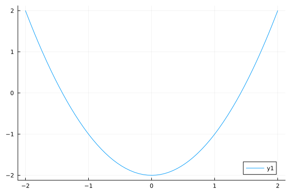
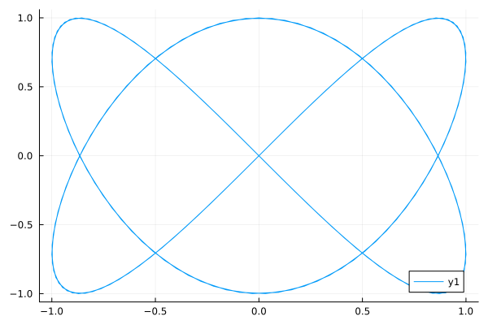
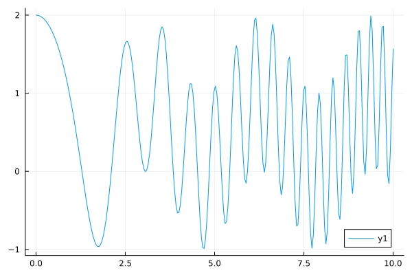
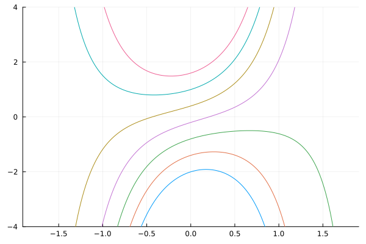
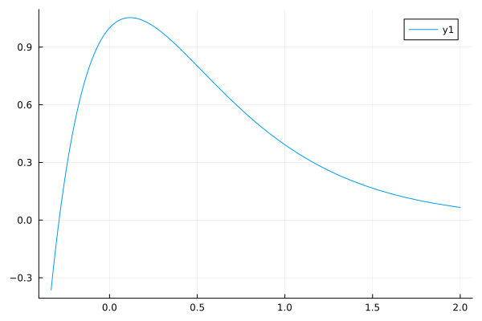

A SymPy introduction
This document provides an introduction to using SymPy within Julia. It owes an enormous debt to SymPy documentation and the tutorial for using SymPy within Python which may be found here.
Here we first load the package into Julia:
julia> using SymPy
Symbols
At the core of SymPy is the introduction of symbolic variables that differ quite a bit from Julia's variables. Symbolic variables do not immediately evaluate to a value, rather the "symbolicness" propagates when interacted with. To keep the resulting expressions manageable, SymPy does some simplifications along the way.
The @syms macro makes creating one or more symbolic variables very easy:
julia> @syms x
(x,)
julia> @syms a b c
(a, b, c)
This macro creates variables in the local scope, no assignment is needed.
This example shows that symbols may be Unicode:
julia> @syms α, β, γ
(α, β, γ)
Additionally you can specify how the variables are displayed using pair notation:
julia> @syms a1=>"α₁" a2=>"α₂"
(α₁, α₂)
The user can type a1, say, but, as seen, the variable prints as α₁.
There are other means, described in the following, to create symbolic variables, but the @syms macro is the suggested one to use.
The sympy.symbols constructor is exported as symbols, as it is a common means for creating symbolic variables in other documentation. Here the variables are passed as a string with names separated by space or commas, allowing the creation of one or more variables:
julia> a = symbols("a")
a
julia> a, b, c = symbols("a b c")
(a, b, c)
The documentation for the Python function is available from within Julia using the SymPy.@doc macro, as in SymPy.@doc sympy.symbols.
In Julia, the symbolic expressions are primarily instances of the Sym type, which holds an instance to an underlying PyObject. This type can be used as a constructor in the standard way:
julia> x = Sym("x")
x
julia> a,b,c = Sym("a, b, c")
(a, b, c)
The sympify function is used by SymPy to convert arbitrary expressions to a type useful within SymPy. It too can be used to create variables (and more):
sympify("x") # sympy.sympify is exportedRanges of symbolic variables
Here are two ways to make sequenced variables:
julia> @syms xs[1:5]
(Sym[xs₁, xs₂, xs₃, xs₄, xs₅],)
julia> ys = [Sym("y$i") for i in 1:5]
5-element Vector{Sym}:
y₁
y₂
y₃
y₄
y₅The former much more succinct, but the latter pattern of use when the number of terms is a variable.
The symbols constructor also has non-Julian range patterns available:
julia> symbols("x:3")
(x0, x1, x2)
julia> symbols("x:2:2")
(x00, x01, x10, x11)Assumptions
SymPy has "core assumptions" that can be asserted for a variable. These include being real, positive, etc. A list of possible assumptions is here.
The @syms macro allows annotations, akin to type annotations, to specify assumptions on new variables:
julia> @syms u1::positive u2::(real, nonzero)
(u1, u2)Skipping ahead, there are some functions from the assumptions module of SymPy to query these properties:
julia> ask(𝑄.positive(u1)), ask(𝑄.positive(u2)), ask(𝑄.positive(u2^2)), ask(𝑄.real(u2))
(true, nothing, nothing, true)
Despite it easy to see that a non-zero real variable (u2) when squared will be positive, this is not identified in the assumptions.
The symbols constructor uses keyword arguments to pass in assumptions. It is illustrated below as they apply to all the variables that are created, which can be more convenient at times.
julia> u = symbols("u")
u
julia> x = symbols("x", real=true)
x
julia> y1, y2 = symbols("y1, y2", positive=true)
(y1, y2)
julia> alpha = symbols("alpha", integer=true, positive=true)
α
We jump ahead for a second to illustrate, but here we see that solve will respect these assumptions, by failing to find solutions to these equations:
julia> @syms x::real
(x,)
julia> solve(x^2 + 1) # ±i are not real
Any[]
julia> @syms x::positive
(x,)
julia> solve(x + 1) # -1 is not positive
Any[]
SymPy can easily create two variables with the same stringified name but different assumptions and will treat these as distinct.
julia> @syms x::real=>"x" y=>"x"
(x, x)
julia> x, y
(x, x)
julia> string(x) == string(y)
true
julia> x == y
false
julia> hash(x) == hash(y)
false
Special constants
Julia has its math constants, like pi and e, SymPy as well. A few of these have Julia counterparts provided by SymPy. For example, these two constants are defined (where oo is for infinity):
julia> PI, oo
(pi, oo)
(The pretty printing of SymPy objects does not work for tuples.)
These are aliases to sympy.pi and sympy.oo. There are a few others.
Numeric values themselves can be symbolic. This example shows the difference. The first asin call dispatches to Julia's asin function, the second to SymPy's:
julia> [asin(1), asin(Sym(1))]
2-element Vector{Sym}:
1.57079632679490
pi/2
Basics of SymPy
As seen, SymPy has symbolic variables and numbers can be symbolic. These are used to build symbolic expressions. In SymPy most all of these have the Sym type, a subtype of the SymbolicObject type. The Sym type is immutable; assignment is necessary to modify a variable.
In the Python library, there are two basic method types for interacting with expressions: ones that are defined in the sympy module and called using fn(args...) style, and ones that are methods of the object and called using Python's dot call notation obj.fn(args...; kwargs...).
The SymPy package essentially merges the Python style and Julia's style as follows:
- Promotion rules are established to promote
Julianumber types to symbolic values so that expressions likepi * xwill first promotepiandxto two symbolic values (withpibeing converted to the exactsympy.pi) and then the SymPy multiplication operator is called on the two symbolic values. The result is wrapped in theSymtype. - For generic methods in
Julia, such assin, a new method specialized on the first argument being symbolic is defined to call the underlyingsympyfunction. (Essentially, the methodsin(x::Sym) = sympy.sin(x)is added.) - For a selection of
sympymethods, an exported function is defined. (For example a method likesimplify(x::Sym) = sympy.simplify(x)is defined and exported.) - For object methods and properties in Python, the dot-call notation is used to call these methods. There is a selection of methods for which a
Julian style is also added. For example,ex.subs(...)andsubs(ex, ...)are both calling styles for thesubsmethod of the expressionex. - When a SymPy function is called,
PyCallconverts the arguments to a Python object, which works as desired in most all cases.
Expressions in SymPy are simplified to some extent but are not immediately evaluated if there are symbols involved. Expressions are stored in a tree-like manner that can be explored using some basic functions. Here we look at x*sin(x^2):
julia> @syms x
(x,)
julia> ex = x * sin(x^2); println(ex)
x*sin(x^2)
julia> SymPy.Introspection.func(ex)
PyObject <class 'sympy.core.mul.Mul'>
julia> a,b = SymPy.Introspection.args(ex)
(x, sin(x^2))
julia> a.is_Atom
true
julia> SymPy.Introspection.func(b)
PyObject sin
julia> b.is_Atom
false
julia> SymPy.Introspection.args(b)
(x^2,)
julia> SymPy.Introspection.func(x^2)
PyObject <class 'sympy.core.power.Pow'>The point is not to discuss the introspection functions, but rather to show the tree-like structure:
x*sin(x^2)
/ \
x sin
|
Pow
/ \
x 2SymPy uses the term Atom to describe the leaves of this tree. An atom is an expression with no subexpressions.
Substitution
SymPy provides several means to substitute values in for the symbolic expressions:
subs: substitution of subexpressions as defined by the objects themselvesreplace: replace matching subexpressions ofselfwithvaluexreplace: exact node replacement in expr tree; also capable of using matching rules
We discuss subs here which uses "old/new" pairs to indicate the substitution.
The method subs is a method of an object, but for this widely used task, a Julian method subs is also defined. Consider the simplest case:
julia> ex = x * sin(x^2); println(ex)
x*sin(x^2)
julia> subs(ex, x^2, x)
x⋅sin(x)
Above, the old/new pair is separated by a comma. Pairs notation is suggested instead:
julia> subs(ex, x => x^2) |> println
x^2*sin(x^4)
Julia's call notation is used for substitution, so we can more directly write:
julia> ex = x^2 + x^4; println(ex)
x^4 + x^2
julia> ex(x^2 => x^5) |> println
x^10 + x^5
Of some note, above x^4 is treated like (x^2)^2 and so an x^10 term is returned after the substitution. The subs method simplifies arguments; xreplace method only replaces exact expressions in syntax tree:
julia> ex.xreplace(Dict(x^2 => x^5)) |> println
x^5 + x^4
For example, this is one way to make a polynomial in a new variable:
julia> @syms x y
(x, y)
julia> ex = x^2 + 2x + 1
2
x + 2⋅x + 1
julia> ex(x => y)
2
y + 2⋅y + 1
Substitution can also be numeric:
julia> ex(x => 0)
1
The output has no free variables, but is still a symbolic quantity.
Expressions with more than one variables can have multiple substitutions (performed from left to right):
julia> @syms x,y,z
(x, y, z)
julia> ex = x + y + z
x + y + z
julia> ex(x => 1, y=> PI)
z + 1 + π
A straight call (e.g. ex(1, PI)) is also possble, where the order of the variables is determined by free_symbols. While useful for expressions of a single variable, being explicit through the use of paired values is recommended.
Simplification
The simplify function in SymPy "simplifies" a given expression. As mentioned in the SymPy documentation, simplification is not a well-defined term and strategies employed may differ between versions. The simplify function depends on over a dozen other functions, such as powsimp, trigsimp, radsimp, logcombine, and together. The simplify function is exported by the SymPy package, the others called through the sympy module.
To illustrate, we have:
julia> @syms x y;
julia> q = x*y + x*y^2 + x^2*y + x;
julia> simplify(q)
⎛ 2 ⎞
x⋅⎝x⋅y + y + y + 1⎠
The above uses factoring. Other simplifications are possible. For example, powers:
julia> @syms m::integer n::integer
(m, n)
julia> x^m / x^n
m -n
x ⋅x
julia> simplify(x^m / x^n)
m - n
x
Simplification rules can also be made by hand using Wild to create wild cards. This shows a simple trigonometric substitution:
julia> x_ = Wild("x")
x
julia> ex = sin(2x)
sin(2⋅x)
julia> replace(ex, sin(2x_) => 2sin(x_)*cos(x_))
2⋅sin(x)⋅cos(x)
With version 1.9 of Julia an extension for the TermInterface package is provided which allows Metatheory rules to be applied to symbolic expressions.
Trigsimp
For trigonometric expressions, simplify will use trigsimp to simplify:
julia> @syms theta::real
(theta,)
julia> p = cos(theta)^2 + sin(theta)^2
2 2
sin (θ) + cos (θ)
Calling either simplify or trigsimp will apply the Pythagorean identity:
julia> simplify(p)
1
While often forgotten, the trigsimp function is, of course, aware of the double angle formulas:
julia> simplify(sin(2theta) - 2sin(theta)*cos(theta))
0
Unlike the example above, trigsimp replaces the product with the double angle:
julia> sympy.trigsimp(2* sin(theta) * cos(theta))
sin(2⋅θ)
The expand_trig function will expand such expressions:
julia> sympy.expand_trig(sin(2theta))
2⋅sin(θ)⋅cos(θ)
Conversion from symbolic to numeric
SymPy provides two identical means to convert a symbolic math expression to a number. One is the evalf method, the other the N function. Within Julia we decouple these, using N to also convert to a Julian value and; evalf leaving the conversion as a symbolic object.
The N function converts symbolic integers, rationals, irrationals, and complex values, while attempting to find an appropriate Julia type for the value.
To see the difference, we use both on PI:
julia> N(PI) # converts to underlying pi Irrational
π = 3.1415926535897...
Whereas, evalf will produce a symbolic numeric value:
julia> PI.evalf()
3.14159265358979
The evalf call allows for a precision argument to be passed through the second argument. This is how $30$ digits of $\pi$ can be extracted:
julia> PI.evalf(30)
3.14159265358979323846264338328
The output of an evalf call is is a symbolic number, not a Julia object. Composing with N we can see the difference:
julia> N(PI.evalf(30))
3.141592653589793238462643383279999999999999999999999999999999999999999999999985
Explicit conversion via the convert(T, ex) pattern can also be used to convert a symbolic number to a Julian one. This is necessary at times when N does not give the desired type.
Algebraic expressions
As mentioned, SymPy overloads many of Julia's functions to work with symbolic objects, such as seen above with sin and asin. The usual mathematical operations such as +, *, -, / etc. work through Julia's promotion mechanism, where numbers are promoted to symbolic objects, others dispatch internally to related SymPy functions.
In most all cases, thinking about this distinction between numbers and symbolic numbers is unnecessary, as numeric values passed to SymPy functions are typically promoted to symbolic expressions. This conversion will take math constants to their corresponding SymPy counterpart, rational expressions to rational expressions, and floating point values to floating point values. However there are edge cases. An expression like 1//2 * pi * x will differ from the seemingly identical 1//2 * (pi * x). The former will produce a floating point value from 1//2 * pi before being promoted to a symbolic instance. Using the symbolic value PI makes this expression work either way.
The sympy.nsimplify function can be used to convert floating point values to rational values, but it is suggested to convert rational value in Julia to symbolic values, rather than rely on later conversions.
Most of Julia's mathematical functions are overloaded to work with symbolic expressions. Julia's generic definitions are used, as possible. This also introduces some edge cases. For example, x^(-2) will work, but k=-2; x^l will balk due to the non-literal, negative, integer exponent. However, either k = -2//1 or k = Sym(-2) will work as expected with x^k, as the former call first dispatches to a generic definition not defined for negative integer exponents unless x is one, but the latter two expressions do not.
Polynomial and rational expressions
SymPy makes it very easy to work with polynomial and rational expressions, as illustrated in the following section.
The expand, factor, and collect functions
A typical polynomial expression in a single variable can be written in two common ways, expanded or factored form. Using factor and expand can move between the two.
For example,
julia> @syms x y z
(x, y, z)
julia> p = x^2 + 3x + 2; println(p)
x^2 + 3*x + 2
julia> factor(p)
(x + 1)⋅(x + 2)
Or
julia> expand(prod((x-i) for i in 1:5)) |> println
x^5 - 15*x^4 + 85*x^3 - 225*x^2 + 274*x - 120
The factor function factors over the rational numbers, so something like this with obvious factors is not finished:
julia> factor(x^2 - 2) |> println
x^2 - 2
When expressions involve one or more variables, it can be convenient to be able to manipulate them. For example, if we define q by:
julia> q = x*y + x*y^2 + x^2*y + x
2 2
x ⋅y + x⋅y + x⋅y + x
Then we can collect the terms by the variable x:
julia> collect(q, x)
2 ⎛ 2 ⎞
x ⋅y + x⋅⎝y + y + 1⎠
or the variable y:
julia> collect(q, y)
2 ⎛ 2 ⎞
x⋅y + x + y⋅⎝x + x⎠
These are identical expressions, though viewed differently.
The SymPy tutorial illustrates that expand can also result in simplifications through this example:
julia> expand((x + 1)*(x - 2) - (x - 1)*x)
-2
These methods are not restricted to polynomial expressions and will work with other expressions. For example, factor identifies the following as a factorable object in terms of the variable exp(x):
julia> factor(exp(2x) + 3exp(x) + 2)
⎛ x ⎞ ⎛ x ⎞
⎝ℯ + 1⎠⋅⎝ℯ + 2⎠
Rational expressions: apart, together, cancel
When working with rational expressions, SymPy does not do much simplification unless asked. For example this expression is not simplified:
julia> r = 1/x + 1/x^2
1 1
─ + ──
x 2
x
To put the terms of r over a common denominator, the together function is available:
julia> together(r)
x + 1
─────
2
x
The apart function does the reverse, creating a partial fraction decomposition from a ratio of polynomials:
julia> apart( (4x^3 + 21x^2 + 10x + 12) / (x^4 + 5x^3 + 5x^2 + 4x))
2⋅x - 1 1 3
────────── - ───── + ─
2 x + 4 x
x + x + 1
Some times SymPy will cancel factors, as here:
julia> top = (x-1)*(x-2)*(x-3)
(x - 3)⋅(x - 2)⋅(x - 1)
julia> bottom = (x-1)*(x-4)
(x - 4)⋅(x - 1)
julia> top/bottom
(x - 3)⋅(x - 2)
───────────────
x - 4
(This might make math faculty a bit upset, but it is in line with student thinking.)
However, with expanded terms, the common factor of (x-1) is not cancelled:
julia> r = expand(top) / expand(bottom)
3 2
x - 6⋅x + 11⋅x - 6
────────────────────
2
x - 5⋅x + 4
The cancel function instructs SymPy to cancel common factors in a rational expression.
julia> cancel(r)
2
x - 5⋅x + 6
────────────
x - 4
Powers
The SymPy tutorial offers a thorough explanation on powers and how the rules of powers are applied during simplification. Basically
\[x^a x^b = x^{a+b}\]
is always true. However
\[x^a y^a=(xy)^a\]
is only true with assumptions, such as $x,y \geq 0$ and $a$ is real, but not in general. For example, $x=y=-1$ and $a=1/2$ has $x^a \cdot y^a = i \cdot i = -1$, where as $(xy)^a = 1$.
\[(x^a)^b = x^{ab}\]
is only true with assumptions. For example $x=-1, a=2$, and $b=1/2$ gives $(x^a)^b = 1^{1/2} = 1$, whereas $x^{ab} = -1^1 = -1$.
We see that with assumptions, the following expression does simplify to $0$:
julia> @syms x::nonnegatve y::nonnegative a::real
(x, y, a)
julia> simplify(x^a * y^a - (x*y)^a)
0
However, without assumptions this is not the case
julia> @syms x, y, a
(x, y, a)
julia> simplify(x^a * y^a - (x*y)^a)
a a a
x ⋅y - (x⋅y)
The simplify function calls powsimp to simplify powers, as above. The powsimp function has the keyword argument force=true to force simplification even if assumptions are not specified:
julia> powsimp(x^a * y^a - (x*y)^a, force=true)
0
More on polynomials
(The following section is borrowed almost directly from the SymPy documentation Examples from Wester's Article) and shows more methods for working with polynomial expressions.
The following are reasonably high-degree polynomials:
julia> @syms x
(x,)
julia> f = 64*x^34 - 21*x^47 - 126*x^8 - 46*x^5 - 16*x^60 - 81
60 47 34 8 5
- 16⋅x - 21⋅x + 64⋅x - 126⋅x - 46⋅x - 81
julia> g = 72*x^60 - 25*x^25 - 19*x^23 - 22*x^39 - 83*x^52 + 54*x^10 + 81
60 52 39 25 23 10
72⋅x - 83⋅x - 22⋅x - 25⋅x - 19⋅x + 54⋅x + 81
julia> h = 34*x^19 - 25*x^16 + 70*x^7 + 20*x^3 - 91*x - 86
19 16 7 3
34⋅x - 25⋅x + 70⋅x + 20⋅x - 91⋅x - 86There are no common divisors of f and g, as gcd illustrates:
julia> gcd(f,g)
1
Multiplying both terms by h and expanding gives a known g.c.d. of h, verified through:
julia> gcd(expand(f*h), expand(g*h)) - h
0
The resultant of two polynomials is a polynomial expression of their coefficients that is equal to zero if and only if the polynomials have a common root :
julia> sympy.resultant(expand(f*h), expand(g*h))
0The following shows high-degree polynomials can easily be factored:
julia> factor(expand(f*g)) |> println
-(16*x^60 + 21*x^47 - 64*x^34 + 126*x^8 + 46*x^5 + 81)*(72*x^60 - 83*x^52 - 22*x^39 - 25*x^25 - 19*x^23 + 54*x^10 + 81)
Similar functionality extends to multivariable polynomials
julia> @syms x y z
(x, y, z)
julia> f = 24*x*y^19*z^8 - 47*x^17*y^5*z^8 + 6*x^15*y^9*z^2 - 3*x^22 + 5
22 17 5 8 15 9 2 19 8
- 3⋅x - 47⋅x ⋅y ⋅z + 6⋅x ⋅y ⋅z + 24⋅x⋅y ⋅z + 5
julia> g = 34*x^5*y^8*z^13 + 20*x^7*y^7*z^7 + 12*x^9*y^16*z^4 + 80*y^14*z
9 16 4 7 7 7 5 8 13 14
12⋅x ⋅y ⋅z + 20⋅x ⋅y ⋅z + 34⋅x ⋅y ⋅z + 80⋅y ⋅z
julia> h = 11*x^12*y^7*z^13 - 23*x^2*y^8*z^10 + 47*x^17*y^5*z^8
17 5 8 12 7 13 2 8 10
47⋅x ⋅y ⋅z + 11⋅x ⋅y ⋅z - 23⋅x ⋅y ⋅z
julia> gcd(expand(f*h), expand(g*h)) - h
0
julia> factor(expand(f*g)) |> println
-2*y^7*z*(6*x^9*y^9*z^3 + 10*x^7*z^6 + 17*x^5*y*z^12 + 40*y^7)*(3*x^22 + 47*x^17*y^5*z^8 - 6*x^15*y^9*z^2 - 24*x*y^19*z^8 - 5)Symbolic powers also can be used:
julia> @syms x::real, n::integer
(x, n)
julia> gcd(x^n - x^(2*n), x^n) |> println
x^n
julia> sympy.resultant(3*x^4 + 3*x^3 + x^2 - x - 2, x^3 - 3*x^2 + x + 5)
0
Factoring can be done over different fields, not just the rationals. This shows factoring over complex terms:
julia> f = 4*x^4 + 8*x^3 + 77*x^2 + 18*x + 153
4 3 2
4⋅x + 8⋅x + 77⋅x + 18⋅x + 153
julia> factor(f, gaussian=true)
⎛ 3⋅ⅈ⎞ ⎛ 3⋅ⅈ⎞
4⋅⎜x - ───⎟⋅⎜x + ───⎟⋅(x + 1 - 4⋅ⅈ)⋅(x + 1 + 4⋅ⅈ)
⎝ 2 ⎠ ⎝ 2 ⎠
julia> factor(f, extension=sympy.I)
⎛ 3⋅ⅈ⎞ ⎛ 3⋅ⅈ⎞
4⋅⎜x - ───⎟⋅⎜x + ───⎟⋅(x + 1 - 4⋅ⅈ)⋅(x + 1 + 4⋅ⅈ)
⎝ 2 ⎠ ⎝ 2 ⎠In the following we make a variable for a symbolic $\sqrt{2}$:
julia> const φ = sqrt(Sym(2))
√2
julia> f = x^3 + (φ - 2)*x^2 - (2*φ + 3)*x - 3*φ
3 2
x + x ⋅(-2 + √2) - x⋅(2⋅√2 + 3) - 3⋅√2
julia> g = x^2 - 2
2
x - 2Trying to cancel f/g leaves the expression unchanged; to make cancel recognize algebraic properties of $\sqrt{2}$ the extension keyword is needed:
julia> cancel(f/g) |> println
(x^3 - 2*x^2 + sqrt(2)*x^2 - 3*x - 2*sqrt(2)*x - 3*sqrt(2))/(x^2 - 2)
julia> cancel(f/g, extension=true) |> println
(x^2 - 2*x - 3)/(x - sqrt(2))
julia> cancel(f/g, extension=φ) |> println
(x^2 - 2*x - 3)/(x - sqrt(2))
Factoring over modular integers (prime only) is possible using the keyword modulus:
julia> f = x^4 - 3*x^2 + 1;
julia> factor(f) |> println
(x^2 - x - 1)*(x^2 + x - 1)
julia> factor(f, modulus=2) |> println
(x^2 + x + 1)^2
julia> factor(f, modulus=5) |> println
(x - 2)^2*(x + 2)^2
The Poly class in SymPy
The expression x^4 - 3x^2 + 1 is stored internally as other expressions are, using the expression tree to build up from the atoms. However, for polynomials, more efficient and advantageous representations are possible. The dense polynomial representation is possible by storing just the coefficients relative to a known basis. For example:
julia> f = x^4 - 2x^2 + 1
4 2
x - 2⋅x + 1
julia> println(sympy.srepr(f))
Add(Pow(Symbol('x'), Integer(4)), Mul(Integer(-1), Integer(2), Pow(Symbol('x'), Integer(2))), Integer(1))
julia> p = sympy.Poly(f, x)
Poly(x**4 - 2*x**2 + 1, x, domain='ZZ')
julia> p.rep
PyObject DMP([mpz(1), mpz(0), mpz(-2), mpz(0), mpz(1)], ZZ, None)
Storing p using just coefficients may be more efficient for many task, such as addition and multiplication, but not, as it will be much more efficient to store f^100 than p^100.
One advantage of the Poly class is specific methods become available as the structure is assumed. For example, we will see the coeffs method used to extract the coefficients.
The domain shown when p is displayed refers to assumptions on the coefficients. Above is a symbol for integers, QQ is for rational numbers, RR for real numbers, CC for complex (along with other variants, like ZZ_I for complex integers.
Coefficients
Returning to polynomials, there are a few functions to find various pieces of the polynomials. First we make a general quadratic polynomial:
julia> @syms a,b,c,x
(a, b, c, x)
julia> p = a*x^2 + b*x + c
2
a⋅x + b⋅x + c
If given a polynomial, like p, there are different means to extract the coefficients:
SymPy provides a
coeffsmethod forPolyobjects, butpmust first be converted to one.SymPy provides the
coeffmethod for expressions, which allows extration of a coeffiecient for a given monomial
The ex.coeff(monom) call will return the corresponding coefficient of the monomial:
julia> p.coeff(x^2) # a
a
julia> p.coeff(x) # b
b
The constant can be found through substitution:
julia> p(x=>0)
c
Though one could use some trick like this to find all the coefficients:
julia> Sym[[p.coeff(x^i) for i in N(degree(p,gen=x)):-1:1]; p(x=>0)]
3-element Vector{Sym}:
a
b
c
that is cumbersome, at best. SymPy has a function coeffs, but it is defined for polynomial types, so will fail on p:
julia> try p.coeffs() catch err "ERROR: KeyError: key `coeffs` not found" end # wrap p.coeffs() for doctest of error
"ERROR: KeyError: key `coeffs` not found"Polynomials are a special class in SymPy and must be constructed. The Poly constructor can be used. As there is more than one free variable in p, we specify the variable x below:
julia> q = sympy.Poly(p, x)
Poly(a*x**2 + b*x + c, x, domain='ZZ[a,b,c]')
julia> q.coeffs()
3-element Vector{Sym}:
a
b
c
The Poly constructor from SymPy is not a function, so is not exported when SymPy is loaded. To access it, the object must be qualified by its containing module, in this case Poly. Were it to be used frequently, an alias could be used, as in const Poly=sympy.Poly or the import_from function, as in import_from(sympy, :Poly). The latter has some attempt to avoid naming collisions.
Polynomial roots: solve, real_roots, polyroots, nroots
SymPy provides functions to find the roots of a polynomial. In general, a polynomial with real coefficients of degree $n$ will have $n$ roots when multiplicities and complex roots are accounted for. The number of real roots is consequently between $0$ and $n$.
For a univariate polynomial expression (a single variable), the real roots, when available, are returned by real_roots. For example,
julia> real_roots(x^2 - 2)
2-element Vector{Sym}:
-√2
√2
Unlike factor – which only factors over rational factors – real_roots finds the two irrational roots here. It is well known (the Abel-Ruffini theorem) that for degree 5 polynomials, or higher, it is not always possible to express the roots in terms of radicals. However, when the roots are rational SymPy can have success:
julia> p = (x-3)^2*(x-2)*(x-1)*x*(x+1)*(x^2 + x + 1); println(p)
x*(x - 3)^2*(x - 2)*(x - 1)*(x + 1)*(x^2 + x + 1)
julia> real_roots(p)
6-element Vector{Sym}:
-1
0
1
2
3
3
The uses of println(p) above and elsewhere throughout the introduction is only for technical reasons related to doctesting and how Documenter.jl parses the expected output. This usage is not idiomatic, or suggested; it only allows the cell to be tested programatically for regressions. Similarly, expected errors are wrapped in try-catch blocks just for testing purposes.
In this example, the degree of p is 8, but only the 6 real roots returned, the double root of $3$ is accounted for. The two complex roots of x^2 + x+ 1 are not considered by this function. The complete set of distinct roots can be found with solve:
julia> solve(p)
7-element Vector{Sym}:
-1
0
1
2
3
-1/2 - sqrt(3)*I/2
-1/2 + sqrt(3)*I/2
This finds the complex roots, but does not account for the double root. The roots function of SymPy does.
The output of calling roots will be a dictionary whose keys are the roots and values the multiplicity.
julia> roots(p)
Dict{Any, Any} with 7 entries:
-1 => 1
3 => 2
1 => 1
0 => 1
-1/2 - sqrt(3)*I/2 => 1
2 => 1
-1/2 + sqrt(3)*I/2 => 1
When exact answers are not provided, the roots call is contentless:
julia> p = x^5 - x + 1
5
x - x + 1
julia> sympy.roots(p)
Dict{Any, Any}()
Calling solve seems to produce very little as well:
julia> rts = solve(p)
5-element Vector{Sym}:
CRootOf(x^5 - x + 1, 0)
CRootOf(x^5 - x + 1, 1)
CRootOf(x^5 - x + 1, 2)
CRootOf(x^5 - x + 1, 3)
CRootOf(x^5 - x + 1, 4)
But in fact, rts contains lots of information. We can extract numeric values quite easily with N:
julia> N.(rts)
5-element Vector{Number}:
-1.167303978261418684256045899854842180720560371525489039140082449275651903429536
-0.18123244446987538 - 1.0839541013177107im
-0.18123244446987538 + 1.0839541013177107im
0.7648844336005847 - 0.35247154603172626im
0.7648844336005847 + 0.35247154603172626im
These are numeric approximations to irrational values. For numeric approximations to polynomial roots, the nroots function is also provided. The answers are still symbolic:
julia> nroots(p)
5-element Vector{Sym}:
-1.16730397826142
-0.181232444469875 - 1.08395410131771⋅ⅈ
-0.181232444469875 + 1.08395410131771⋅ⅈ
0.764884433600585 - 0.352471546031726⋅ⅈ
0.764884433600585 + 0.352471546031726⋅ⅈ
The solve function
The solve function is more general purpose than just finding roots of univariate polynomials. The function tries to solve for when an expression is 0, or a set of expressions are all 0.
For example, it can be used to solve when $\cos(x) = \sin(x)$:
julia> solve(cos(x) - sin(x))
1-element Vector{Sym}:
pi/4
Though there are infinitely many correct solutions, these are within a certain range.
The above solved an equation $\cos(x) = \sin(x)$ by subtracting and solving the mathematically equivalent $\cos(x) - \sin(x) = 0$, the $0$ being assumed by SymPy when an explicit equation is not specified. Alternatively, the ~ can be used in place of = when representing an equation, as in solve(cos(x) ~ sin(x), x).
The solveset function appeared in version 1.0 of SymPy and is an intended replacement for solve. Here we see it describes all solutions:
julia> u = solveset(cos(x) ~ sin(x))
⎧ 5⋅π │ ⎫ ⎧ π │ ⎫
⎨2⋅n⋅π + ─── │ n ∊ ℤ⎬ ∪ ⎨2⋅n⋅π + ─ │ n ∊ ℤ⎬
⎩ 4 │ ⎭ ⎩ 4 │ ⎭
The output of solveset is a set, rather than a vector or dictionary. To get the values requires some work. For finite sets we collect the elements with collect, but first we must convert to a Julia Set:
julia> v = solveset(x^2 ~ 4, x)
{-2, 2}
julia> collect(Set(v...))
2-element Vector{Any}:
2
-2
This composition is done in the elements function:
julia> elements(v)
2-element Vector{Sym}:
2
-2
The elements function does not work for more complicated (non-finite) sets, such as u. For these, the contains method may be useful to query the underlying elements.
julia> solveset(cos(x) ~ sin(x), x).contains(PI/4)
TrueThe output is a symbolic True. This can be converted via N or compared to rrue, but not directly used within a conditional argument:
julia> N(True), True == true, True === true
(true, true, false)
Solving within Sympy has limits. For example, there is no symbolic solution here:
julia> try solve(cos(x) - x) catch err "error" end # wrap command for doctest of error
"error"(And hence the error message generated.)
For such an equation, a numeric method would be needed, similar to the Roots package. For example:
julia> nsolve(cos(x) - x, 1) ≈ 0.73908513321516064165
trueThough it can't solve everything, the solve function can also solve equations of a more general type. For example, here it is used to derive the quadratic equation:
julia> @syms a::real, b::real, c::real
(a, b, c)
julia> p = a*x^2 + b*x + c
2
a⋅x + b⋅x + cjulia> solve(p, x)
2-element Vector{Sym}:
(-b + sqrt(-4*a*c + b^2))/(2*a)
-(b + sqrt(-4*a*c + b^2))/(2*a)
The extra argument x is passed to solve so that solve knows which variable to solve for.
The solveset function is similar:
julia> solveset(p, x)
⎧ _____________ _____________⎫
⎪ ╱ 2 ╱ 2 ⎪
⎨ b ╲╱ -4⋅a⋅c + b b ╲╱ -4⋅a⋅c + b ⎬
⎪- ─── - ────────────────, - ─── + ────────────────⎪
⎩ 2⋅a 2⋅a 2⋅a 2⋅a ⎭
If the x value is not given, solveset will error and solve will try to find a solution over all the free variables:
julia> solve(p)
1-element Vector{Dict{Any, Any}}:
Dict(a => -(b*x + c)/x^2)Systems of equations can be solved as well. For example, to solve this linear system: $2x + 3y = 6, 3x - 4y=12$, we have:
julia> @syms x::real, y::real
(x, y)
julia> exs = (2x+3y ~ 6, 3x-4y ~ 12)
(Eq(2*x + 3*y, 6), Eq(3*x - 4*y, 12))
julia> d = solve(exs); # Dict(x=>60/17, y=>-6/17)We formed a tuple of equations above. A matrix of equations is now deprecated within SymPy and the automatic conversion of PyCall does that conversion.
We can "check our work" by plugging into each equation. We take advantage of how the subs function, used implicitly, allows us to pass in a dictionary:
julia> [ex(d) for ex ∈ exs]
2-element Vector{Sym}:
True
True
The more Julian way to solve a linear equation, like this would be as follows:
julia> A = Sym[2 3; 3 -4]; b = Sym[6, 12]
2-element Vector{Sym}:
6
12
julia> A \ b
2-element Vector{Sym}:
60/17
-6/17Rather than use a generic lu solver through Julia (which proved slow for larger systems), the \ operator utilizes solve to perform this computation.
In the previous example, the system had two equations and two unknowns. When that is not the case, one can specify the variables to solve for in a tuple. In this example, we find a quadratic polynomial that approximates $\cos(x)$ near $0$:
julia> a,b,c,h = symbols("a,b,c,h", real=true)
(a, b, c, h)
julia> p = a*x^2 + b*x + c
2
a⋅x + b⋅x + c
julia> fn = cos
cos (generic function with 14 methods)
julia> exs = [fn(0*h)-p(x => 0), fn(h)-p(x => h), fn(2h)-p(x => 2h)]
3-element Vector{Sym}:
1 - c
-a*h^2 - b*h - c + cos(h)
-4*a*h^2 - 2*b*h - c + cos(2*h)
julia> d = solve(exs, (a,b,c))
Dict{Any, Any} with 3 entries:
a => -cos(h)/h^2 + cos(2*h)/(2*h^2) + 1/(2*h^2)
c => 1
b => 2*cos(h)/h - cos(2*h)/(2*h) - 3/(2*h)
Again, a dictionary is returned. The polynomial itself can be found by substituting back in for a, b, and c:
julia> quad_approx = p.subs(d); println(quad_approx)
x^2*(-cos(h)/h^2 + cos(2*h)/(2*h^2) + 1/(2*h^2)) + x*(2*cos(h)/h - cos(2*h)/(2*h) - 3/(2*h)) + 1
Taking the "limit" as $h$ goes to $0$ produces the answer $1 - x^2/2$, as will be shown later.
Finally for solve, we show one way to re-express the polynomial $a_2x^2 + a_1x + a_0$ as $b_2(x-c)^2 + b_1(x-c) + b_0$ using solve (and not, say, an expansion theorem.)
julia> n = 3
3
julia> @syms x, c
(x, c)
julia> @syms as[1:3]
(Sym[as₁, as₂, as₃],)
julia> @syms bs[1:3]
(Sym[bs₁, bs₂, bs₃],)
julia> p = sum([as[i+1]*x^i for i in 0:(n-1)]);
julia> q = sum([bs[i+1]*(x-c)^i for i in 0:(n-1)]);
julia> solve(p ~ q, bs)
Dict{Any, Any} with 3 entries:
bs₁ => as₁ + as₂*c + as₃*c^2
bs₂ => as₂ + 2*as₃*c
bs₃ => as₃
Solving using logical operators
The solve function does not need to just solve ex = 0. There are other means to specify an equation. Ideally, it would be nice to say ex1 == ex2, but the interpretation of == is not for this. Rather, SymPy introduces Eq for equality. So this expression
julia> solve(Eq(x, 1))
1-element Vector{Sym}:
1
gives 1, as expected from solving x == 1.
The previously used infix operator ~ simply calls Eq to construct an equality.
In addition to Eq, there are Lt, Le, Ge, Gt. The Unicode operators (e.g., \leq and not \leq) are not aliased to these, but there are alternatives \ll[tab], \leqq[tab], \Equal[tab], \geqq[tab], \gg[tab] and \neg[tab] to negate.
So, the above could have been written with the following nearly identical expression, though it is entered with \Equal[tab]:
julia> solve(x ⩵ 1)
1-element Vector{Sym}:
1
The infix tilde, ~, consistent with the interface from Symbolics , is recommended for readability over ⩵.
Plotting
The Plots package allows many 2-dimensional plots of SymPy objects to be agnostic as to a backend plotting package. SymPy provides recipes that allow symbolic expressions to be used where functions are part of the Plots interface. [See the help page for sympy_plotting.]
In particular, the following methods of plot are defined:
plot(ex::Sym, a, b)will plot the expression of single variable over the interval[a,b]plot!(ex::Sym, a, b)will add to the current plot a plot of the expression of single variable over the interval[a,b], or, when not specified, the current plotting limitsplot(ex1, ex2, a, b)will plot a parametric plot of the two expressions over the interval[a,b].contour(xs, ys, ex::Sym)will make a contour plot of the expression of two variables over the grid specifed by thexsandys.surface(xs, ys, ex::Sym)will make a surface plot of the expression of two variables over the grid specifed by thexsandys.
For example:
using SymPy, Plots
@syms x
plot(x^2 - 2, -2, 2)
Or a parametric plot:
plot(sin(2x), cos(3x), 0, 4pi);
For plotting with other plotting packages, it is generally faster to first call lambdify on the expression and then generate y values with the resulting Julia function. An example might follow this pattern:
ex = cos(x)^2 + cos(x^2)
fn = lambdify(ex)
xs = range(0, stop=10, length=256)
plot(xs, fn.(xs))
In addition, with PyPlot a few other plotting functions from SymPy are available from its interface to MatplotLib:
plot3d_parametric_surface(ex1::Sym, ex2::Sym, ex3::Sym), (uvar, a0, b0), (vvar, a1, b1))– make a surface plot of the expressions parameterized by the region[a0,b0] x [a1,b1]. The default region is[-5,5]x[-5,5]where the ordering of the variables is given byfree_symbols(ex).plot_implicit(predictate, (xvar, a0, b0), (yvar, a1, b1))– make
an implicit equation plot of the expressions over the region [a0,b0] x [a1,b1]. The default region is [-5,5]x[-5,5] where the ordering of the variables is given by free_symbols(ex). To create predicates from the variable, the functions Lt, Le, Eq, Ge, and Gt can be used, as with Lt(x*y, 1). For infix notation, unicode operators can be used: \ll<tab>, \leqq<tab>, \Equal<tab>, \geqq<tab>, and \gg<tab>. For example, x*y ≪ 1. To combine terms, the unicode \vee<tab> (for "or"), \wedge<tab> (for "and") can be used.
Calculus
SymPy has many of the basic operations of calculus provided through a relatively small handful of functions.
Limits
Limits are computed by the limit function which takes an expression, a variable and a value, and optionally a direction specified by either dir="+" or dir="-".
For example, this shows Gauss was right:
julia> limit(sin(x)/x, x, 0)
1
Alternatively, the second and third arguments can be specified as a pair:
julia> limit(sin(x)/x, x => 0)
1
Limits at infinity are done by using oo for $\infty$:
julia> limit((1+1/x)^x, x => oo)
ℯ
This example computes what L'Hopital reportedly paid a Bernoulli for
julia> @syms a::positive
(a,)
julia> ex = (sqrt(2a^3*x-x^4) - a*(a^2*x)^(1//3)) / (a - (a*x^3)^(1//4)); println(ex)
(-a^(5/3)*x^(1/3) + sqrt(2*a^3*x - x^4))/(-a^(1/4)*(x^3)^(1/4) + a)
Substituting $x=a$ gives an indeterminate form:
julia> ex(x=>a)
nan
We can see it is of the form $0/0$:
julia> denom(ex)(x => a), numer(ex)(x => a)
(0, 0)
And we get
julia> limit(ex, x => a)
16⋅a
────
9
In a previous example, we defined quad_approx:
julia> quad_approx |> println
x^2*(-cos(h)/h^2 + cos(2*h)/(2*h^2) + 1/(2*h^2)) + x*(2*cos(h)/h - cos(2*h)/(2*h) - 3/(2*h)) + 1
The limit as h goes to $0$ gives 1 - x^2/2, as expected:
julia> limit(quad_approx, h => 0)
2
x
1 - ──
2
Left and right limits
The limit is defined when both the left and right limits exist and are equal. But left and right limits can exist and not be equal. The sign function is $1$ for positive $x$, $-1$ for negative $x$ and $0$ when $x$ is 0. It should not have a limit at $0$:
julia> limit(sign(x), x => 0)
1
Oops. Well, the left and right limits are different anyways:
julia> limit(sign(x), x => 0, dir="-"), limit(sign(x), x => 0, dir="+")
(-1, 1)
The limit function finds the right limit by default. The direction "+-" will check both, erroring if the two do not agree, as below with a message of "ValueError('The limit does not exist since left hand limit = -1 and right hand limit = 1')"
julia> try(limit(sign(x), x => 0, dir="+-")) catch err "error" end
"error"
Numeric limits
The limit function uses the Gruntz algorithm. It is far more reliable then simple numeric attempts at limits. An example of Gruntz is the right limit at $0$ of the function:
julia> j(x) = 1/x^(log(log(log(log(1/x)))) - 1)
j (generic function with 1 method)
A numeric attempt might be done along these lines:
julia> hs = [10.0^(-i) for i in 6:16]
11-element Vector{Float64}:
1.0e-6
1.0e-7
1.0e-8
1.0e-9
1.0e-10
1.0e-11
1.0e-12
1.0e-13
1.0e-14
1.0e-15
1.0e-16
julia> ys = [r(h) for h in hs]
11-element Vector{Float64}:
6.146316238971239e-7
1.4298053954169988e-7
3.4385814272678773e-8
8.529918929292077e-9
2.176869418153584e-9
5.700972891527026e-10
1.528656750900649e-10
4.188388514215749e-11
1.1705748589577942e-11
3.331965462828263e-12
9.64641441953344e-13
julia> [hs ys]
11×2 Matrix{Float64}:
1.0e-6 6.14632e-7
1.0e-7 1.42981e-7
1.0e-8 3.43858e-8
1.0e-9 8.52992e-9
1.0e-10 2.17687e-9
1.0e-11 5.70097e-10
1.0e-12 1.52866e-10
1.0e-13 4.18839e-11
1.0e-14 1.17057e-11
1.0e-15 3.33197e-12
1.0e-16 9.64641e-13
With a values appearing to approach $0$. However, in fact these values will ultimately head off to $\infty$:
julia> limit(j(x), x => 0, dir="+")
∞
Derivatives
One could use limits to implement the definition of a derivative:
julia> @syms x::real, h::real
(x, h)
julia> j(x) = x * exp(x)
j (generic function with 1 method)
julia> limit((j(x+h) - j(x)) / h, h => 0) |> println
x*exp(x) + exp(x)
However, it would be pretty inefficient, as SymPy already does a great job with derivatives. The diff function implements this. The basic syntax is diff(ex, x) to find the first derivative in x of the expression in ex, or its generalization to $k$th derivatives with diff(ex, x, k).
The same derivative computed above by a limit could be found with:
julia> diff(j(x), x)
x x
x⋅ℯ + ℯ
Similarly, we can compute other derivatives:
julia> diff(x^x, x)
x
x ⋅(log(x) + 1)
Or, higher order derivatives:
julia> diff(exp(-x^2), (x, 2)) |> println
2*(2*x^2 - 1)*exp(-x^2)
As an alternate to specifying the number of derivatives, multiple variables can be passed to diff:
julia> diff(exp(-x^2), x, x, x) |> println # same as diff(..., (x, 3))
4*x*(3 - 2*x^2)*exp(-x^2)
This could include variables besides x, as is needed with mixed partial derivatives.
The output is a simple expression, so diff can be composed with other functions, such as solve. For example, here we find the critical points where the derivative is $0$ of some rational function:
julia> j(x) = (12x^2 - 1) / (x^3)
j (generic function with 1 method)
julia> diff(j(x), x) |> solve
2-element Vector{Sym}:
-1/2
1/2
Partial derivatives
The diff function makes finding partial derivatives as easy as specifying the variable to differentiate in. This example computes the mixed partials of an expression in x and y:
julia> @syms x y
(x, y)
julia> ex = x^2*cos(y)
2
x ⋅cos(y)
julia> [diff(ex, v1, v2) for v1 in [x,y], v2 in [x,y]] # also hessian(ex, (x,y))
2×2 Matrix{Sym}:
2⋅cos(y) -2⋅x⋅sin(y)
-2⋅x⋅sin(y) -x^2*cos(y)
Unevaluated derivatives
The Derivative constructor provides unevaluated derivatives, useful with differential equations and the output for unknown functions. Here is an example:
julia> ex = sympy.Derivative(exp(x*y), x, (y, 2))
3
∂ ⎛ x⋅y⎞
──────⎝ℯ ⎠
2
∂y ∂x
These expressions are evaluated with the doit method:
julia> ex.doit() |> println
x*(x*y + 2)*exp(x*y)
Implicit derivatives
SymPy can be used to find derivatives of implicitly defined functions. For example, the task of finding $dy/dx$ for the equation:
\[~ y^4 - x^4 -y^2 + 2x^2 = 0 ~\]
As with the mathematical solution, the key is to treat one of the variables as depending on the other. In this case, we think of $y$ locally as a function of $x$. SymPy allows us to create symbolic functions, and we will use one to substitute in for y.
In SymPy, symbolic functions use the class name "Function", but in SymPy we use SymFunction to avoid a name collision with one of Julia's primary types. The constructor can be used as SymFunction(:F):
julia> F, G = SymFunction("F"), SymFunction("G")
(F, G)
The @syms macro can also more naturally be used, in place of SymFunction:
julia> @syms F(), G()
(F, G)
We can call these functions, but we get a function expression:
julia> F(x)
F(x)
SymPy can differentiate symbolically, again with diff:
julia> diff(F(x))
d
──(F(x))
dx
To get back to our problem, we have our expression:
julia> @syms x, y
(x, y)
julia> ex = y^4 - x^4 - y^2 + 2x^2
4 2 4 2
- x + 2⋅x + y - y
Now we substitute:
julia> ex1 = ex(y=>F(x))
4 2 4 2
- x + 2⋅x + F (x) - F (x)
We want to differentiate "both" sides. As the right side is just $0$, there isn't anything to do here, but mentally keep track. As for the left we have:
julia> ex2 = diff(ex1, x)
3 3 d d
- 4⋅x + 4⋅x + 4⋅F (x)⋅──(F(x)) - 2⋅F(x)⋅──(F(x))
dx dx
Now we collect terms and solve in terms of $F'(x)$
julia> ex3 = solve(ex2, F'(x))[1]
3
2⋅x - 2⋅x
──────────────
3
2⋅F (x) - F(x)
Finally, we substitute back into the solution for $F(x)$:
julia> ex4 = ex3(F(x) => y)
3
2⋅x - 2⋅x
──────────
3
2⋅y - y
Example: A Norman Window
A classic calculus problem is to maximize the area of a Norman window (in the shape of a rectangle with a half circle atop) when the perimeter is fixed to be $P \geq 0$.
Label the rectangle with $w$ and $h$ for width and height and then the half circle has radius $r=w/2$. With this, we can see that the area is $wh+(1/2)\pi r^2$ and the perimeter is $w + 2h + \pi r$. This gives:
julia> @syms w::nonnegative, h::nonnegative, P::nonnegative
(w, h, P)
julia> r = w/2
w
─
2
julia> A = w*h + 1//2 * (pi * r^2); println(A)
h*w + pi*w^2/8
julia> p = w + 2h + pi*r; println(p)
2*h + w + pi*w/2
(There is a subtlety above: using 1//2*pi*r^2 will lose exactness, as the products will be done left to right, and 1//2*pi will be converted to an approximate floating point value before multiplying r^2. As such we rewrite the terms. It may be easier to use PI instead of pi.)
We want to solve for h from when p=P (our fixed value) and substitute back into A. We solve taking the first solution.
julia> h0 = solve(p ~ P, h)[1]
P π⋅w w
─ - ─── - ─
2 4 2
julia> A1 = A(h => h0)
2
π⋅w ⎛P π⋅w w⎞
──── + w⋅⎜─ - ─── - ─⎟
8 ⎝2 4 2⎠
Now we note this is a parabola in w, so any maximum will be at an endpoint or the vertex, provided the leading term is negative. The leading term can be found through:
julia> sympy.Poly(A1, w).coeffs()
2-element Vector{Sym}:
-1/2 - pi/8
P/2
Or without using the Poly methods, we could do this:
julia> collect(expand(A1), w).coeff(w^2)
1 π
- ─ - ─
2 8
Either way, the leading coefficient, $-1/2 - \pi/8$, is negative, so the maximum can only happen at an endpoint or the vertex of the parabola. Now we check that when $w=0$ (the left endpoint) the area is $0$:
julia> A1(w => 0)
0
The other endpoint is when $h=0$, or
julia> b = solve((P-p)(h => 0), w)[1]
2⋅P
─────
2 + π
We will need to check the area at b and at the vertex.
To find the vertex, we can use calculus – it will be when the derivative in w is $0$:
julia> c = solve(diff(A1, w), w)[1]
2⋅P
─────
π + 4
The answer will be the larger of A1 at b or c:
julia> atb = A1(w => b); println(atb)
pi*P^2/(2*(2 + pi)^2) + 2*P*(-pi*P/(2*(2 + pi)) - P/(2 + pi) + P/2)/(2 + pi)
julia> atc = A1(w => c); println(atc)
pi*P^2/(2*(pi + 4)^2) + 2*P*(-pi*P/(2*(pi + 4)) - P/(pi + 4) + P/2)/(pi + 4)
A simple comparison isn't revealing:
julia> atc - atb |> println
-pi*P^2/(2*(2 + pi)^2) + pi*P^2/(2*(pi + 4)^2) - 2*P*(-pi*P/(2*(2 + pi)) - P/(2 + pi) + P/2)/(2 + pi) + 2*P*(-pi*P/(2*(pi + 4)) - P/(pi + 4) + P/2)/(pi + 4)
But after simplifying, we can see that this expression is positive if $P$ is:
julia> simplify(atc - atb) |> println
2*P^2/(16 + pi^3 + 20*pi + 8*pi^2)
With this observation, we conclude the maximum area happens at c with area atc.
Integrals
Integration is implemented in SymPy through the integrate function. There are two basic calls: integrate(f(x), x) will find the indefinite integral ($\int f(x) dx$) and when endpoints are specified through integrate(f(x), (x, a, b)) the definite integral will be found ($\int_a^b f(x) dx$). The special form integrate(ex, x, a, b) can be used for single integrals, but the specification through a tuple is needed for multiple integrals, so isn't illustrated here.
Basic integrals are implemented:
julia> integrate(x^3, x)
4
x
──
4
Or in more generality:
julia> @syms n::real
(n,)
julia> ex = integrate(x^n, x)
⎧ n + 1
⎪x
⎪────── for n ≠ -1
⎨n + 1
⎪
⎪log(x) otherwise
⎩
The output here is a piecewise function, performing a substitution will choose a branch in this case:
julia> ex(n => 3)
4
x
──
4
Definite integrals are just as easy. Here is Archimedes' answer:
julia> integrate(x^2, (x, 0, 1))
1/3
Tedious problems, such as those needing multiple integration-by-parts steps can be done easily:
julia> integrate(x^5 * sin(x), x)
5 4 3 2
- x ⋅cos(x) + 5⋅x ⋅sin(x) + 20⋅x ⋅cos(x) - 60⋅x ⋅sin(x) - 120⋅x⋅cos(x) + 120⋅sin(x)
The SymPy tutorial says:
"
integrateuses powerful algorithms that are always improving to compute both definite and indefinite integrals, including heuristic pattern matching type algorithms, a partial implementation of the Risch algorithm, and an algorithm using Meijer G-functions that is useful for computing integrals in terms of special functions, especially definite integrals."
The tutorial gives the following example:
julia> ex = (x^4 + x^2*exp(x) - x^2 - 2*x*exp(x) - 2*x - exp(x))*exp(x)/((x - 1)^2*(x + 1)^2*(exp(x) + 1))
⎛ 4 2 x 2 x x⎞ x
⎝x + x ⋅ℯ - x - 2⋅x⋅ℯ - 2⋅x - ℯ ⎠⋅ℯ
────────────────────────────────────────
2 2 ⎛ x ⎞
(x - 1) ⋅(x + 1) ⋅⎝ℯ + 1⎠
With indefinite integral:
julia> integrate(ex, x) |> println
log(exp(x) + 1) + exp(x)/(x^2 - 1)
Multiple integrals
The integrate function uses a tuple, (var, a, b), to specify the limits of a definite integral. This syntax lends itself readily to multiple integration.
For example, the following computes the integral of $xy$ over the unit square:
julia> @syms x, y
(x, y)
julia> integrate(x*y, (y, 0, 1), (x, 0, 1))
1/4
The innermost terms can depend on outer ones. For example, the following integrates $x^2y$ over the upper half of the unit circle:
julia> integrate(x^2*y, (y, 0, sqrt(1 - x^2)), (x, -1, 1))
2/15
Unevaluated integrals
The Integral constructor can stage unevaluated integrals that will be evaluated by calling doit. It is also used when the output is unknown. This example comes from the tutorial:
julia> integ = sympy.Integral(sin(x^2), x)
⌠
⎮ ⎛ 2⎞
⎮ sin⎝x ⎠ dx
⌡
julia> integ.doit() |> println
3*sqrt(2)*sqrt(pi)*fresnels(sqrt(2)*x/sqrt(pi))*gamma(3/4)/(8*gamma(7/4))
Taylor series
The series function can compute series expansions around a point to a specified order. For example, the following command finds four terms of the series expansion of exp(sin(x)) in x about $c=0$:
julia> s1 = series(exp(sin(x)), x, 0, 4); println(s1)
1 + x + x^2/2 + O(x^4)
The coefficients are from the Taylor expansion ($a_i=f^{i}(c)/i!$). The big "O" term indicates that the remainder is no bigger in size than a constant times $x^4$, as $x\rightarrow 0$.
Consider what happens when we multiply series of different orders:
julia> s2 = series(cos(exp(x)), x, 0, 6); println(s2)
cos(1) - x*sin(1) + x^2*(-sin(1)/2 - cos(1)/2) - x^3*cos(1)/2 + x^4*(-cos(1)/4 + 5*sin(1)/24) + x^5*(-cos(1)/24 + 23*sin(1)/120) + O(x^6)
julia> simplify(s1 * s2) |> println
cos(1) + sqrt(2)*x*cos(pi/4 + 1) - 3*x^2*sin(1)/2 - sqrt(2)*x^3*sin(pi/4 + 1) + O(x^4)
The big "O" term is $x^4$, as smaller order terms in s2 are covered in this term. The big "O" notation is sometimes not desired, in which case the removeO function can be employed:
julia> s1.removeO() |> println
x^2/2 + x + 1
Sums
SymPy can do sums, including some infinite ones. The summation function performs this task. For example, we have
julia> @syms i, n
(i, n)
julia> summation(i^2, (i, 1, n)) |> println
n^3/3 + n^2/2 + n/6
Like Integrate and Derivative, there is also a Sum function to stage the task until the doit function is called to initiate the sum.
Some famous sums can be computed:
julia> sn = sympy.Sum(1/i^2, (i, 1, n)); println(sn)
Sum(i^(-2), (i, 1, n))
julia> sn.doit()
harmonic(n, 2)
And from this a limit is available:
julia> limit(sn.doit(), n, oo) |> println
pi^2/6
This would have also been possible through summation(1/i^2, (i, 1, oo)).
Vector-valued functions
Julia makes constructing a vector of symbolic objects easy:
julia> @syms x,y
(x, y)
julia> v = [1,2,x]
3-element Vector{Sym}:
1
2
x
julia> w = [1,y,3]
3-element Vector{Sym}:
1
y
3
The generic definitions of vector operations will work as expected with symbolic objects:
julia> using LinearAlgebra
julia> dot(v,w) |> println
2*y + 3*conjugate(x) + 1
Or
julia> cross(v,w)
3-element Vector{Sym}:
-x⋅y + 6
x - 3
y - 2
Finding gradients can be done using a comprehension.
julia> ex = x^2*y - x*y^2
2 2
x ⋅y - x⋅y
julia> Sym[diff(ex,var) for var in (x,y)]
2-element Vector{Sym}:
2*x*y - y^2
x^2 - 2*x*y
Or through broadcasting:
julia> diff.(ex, (x,y))
(2*x*y - y^2, x^2 - 2*x*y)The mixed partials is similarly done by passing two variables to differentiate in to diff, as illustrated previously:
julia> Sym[diff(ex, v1, v2) for v1 in (x,y), v2 in (x,y)]
2×2 Matrix{Sym}:
2⋅y 2⋅(x - y)
2⋅(x - y) -2⋅x
For this task, SymPy provides the hessian method:
julia> hessian(ex, (x,y))
2×2 Matrix{Sym}:
2⋅y 2⋅x - 2⋅y
2⋅x - 2⋅y -2⋅x
Matrices
Julia has excellent infrastructure to work with generic matrices, such as Matrix{Sym} objects (matrices with symbolic entries). As well, SymPy has a class for matrices. SymPy, through PyCall, automatically maps mutable SymPy matrices into Julian matrices of type Array{Sym}.
Constructing matrices with symbolic entries follows Julia's conventions:
julia> @syms x,y
(x, y)
julia> M = [1 x; x 1]
2×2 Matrix{Sym}:
1 x
x 1
However, SymPy may throw a deprecation order when mapping a Matrix{Sym} argument for a function, as the underlying sympy.Matrix class is for symbolic numbers only since this change. The suggestion is to use a "list of lists, TableForm, NumPy array, or some
other data structure instead". A tuple of tuples will map to a list of lists.
Here is an example of a tuple of tuples forming a matrix:
julia> A = sympy.Matrix( ((1,x), (y,2)) )
2×2 Matrix{Sym}:
1 x
y 2This is useful if copying SymPy examples, but otherwise unneccesary, these are immediately mapped into Julia arrays by PyCall – unless an immutable array is desired, and then the sympy.ImmutableMatrix constructor is used.
Some more examples:
julia> diagm(0=>ones(Sym, 5))
5×5 Matrix{Sym}:
1 0 0 0 0
0 1 0 0 0
0 0 1 0 0
0 0 0 1 0
0 0 0 0 1
julia> M = [1 x; x 1]
2×2 Matrix{Sym}:
1 x
x 1
julia> M^2
2×2 Matrix{Sym}:
x^2 + 1 2⋅x
2⋅x x^2 + 1
julia> det(M)
2
1 - xWe can call Julia's generic matrix functions in the usual manner, e.g:
julia> det(A)
-x⋅y + 2
We can also call SymPy's matrix methods using the dot-call syntax:
julia> A.det()
-x⋅y + 2
Actually, det(A) avoids the generic Julia implementation. A better example might be qr(M) versus M.QRdecomposition() to see a generic Julia implementation for Matrix{Sym} against SymPy's method for matrices.
Occasionally, the SymPy method has more content:
julia> eigvecs(M)
2×2 Matrix{Sym}:
1 -1
1 1
As compared to SymPy's eigenvects which yields:
julia> A.eigenvects()
2-element Vector{Tuple{Sym, Int64, Vector{Matrix{Sym}}}}:
(3/2 - sqrt(4*x*y + 1)/2, 1, [[(3/2 - sqrt(4*x*y + 1)/2)/y - 2/y; 1;;]])
(sqrt(4*x*y + 1)/2 + 3/2, 1, [[(sqrt(4*x*y + 1)/2 + 3/2)/y - 2/y; 1;;]])
(This is a bit misleading, as the generic eigvecs fails on M, so the value is basically just repackaged from A.eigenvects().)
This example from the SymPy tutorial shows the nullspace method:
julia> A = Sym[1 2 3 0 0; 4 10 0 0 1]
2×5 Matrix{Sym}:
1 2 3 0 0
4 10 0 0 1
julia> vs = A.nullspace()
3-element Vector{Matrix{Sym}}:
[-15; 6; … ; 0; 0;;]
[0; 0; … ; 1; 0;;]
[1; -1/2; … ; 0; 1;;]
This confirms that values found are indeed in the null space of A:
julia> [A*vs[i] for i in 1:3]
3-element Vector{Matrix{Sym}}:
[0; 0;;]
[0; 0;;]
[0; 0;;]
Symbolic expressions can be included in the matrices:
julia> A = [1 x; x 1]
2×2 Matrix{Sym}:
1 x
x 1
julia> P, D = A.diagonalize() # M = PDP^-1
(Sym[-1 1; 1 1], Sym[1 - x 0; 0 x + 1])
julia> A - P*D*inv(P)
2×2 Matrix{Sym}:
0 0
0 0
Differential equations
SymPy has facilities for solving ordinary differential equations. The key is to create a symbolic function expression using SymFunction. Again, this may be done through:
julia> @syms F()
(F,)
With this, we can construct a differential equation. Following the SymPy tutorial, we solve $f''(x) - 2f'(x) + f(x) = \sin(x)$:
julia> diffeq = diff(F(x), x, 2) - 2*diff(F(x)) + F(x) ~ sin(x); println(diffeq)
Eq(F(x) - 2*Derivative(F(x), x) + Derivative(F(x), (x, 2)), sin(x))
With this, we just need the dsolve function. This is called as dsolve(eq) or dsolve(eq, F(x)):
julia> ex = dsolve(diffeq, F(x)); println(ex)
Eq(F(x), (C1 + C2*x)*exp(x) + cos(x)/2)
The dsolve function in SymPy has an extensive list of named arguments to control the underlying algorithm. These can be passed through with the appropriate keyword arguments.
The definition of the differential equation expects the cumbersome diff(ex, var) to provide the derivative. The Differential function lessens the visual noise (with a design taken from ModelingToolkit). The above would be:
julia> D = Differential(x)
Differential(x)
julia> diffeq = D(D(F))(x) - 2D(F)(x) + F(x) ~ sin(x); println(diffeq)
Eq(F(x) - 2*Derivative(F(x), x) + Derivative(F(x), (x, 2)), sin(x))
julia> sympy.dsolve(diffeq, F(x)) |> println
Eq(F(x), (C1 + C2*x)*exp(x) + cos(x)/2)This solution has two constants, $C_1$ and $C_2$, that would be found from initial conditions. Say we know $F(0)=0$ and $F'(0)=1$, can we find the constants? To work with the returned expression, it is most convenient to get just the right hand side. The rhs method will return the right-hand side of a relation:
julia> ex1 = rhs(ex); println(ex1)
(C1 + C2*x)*exp(x) + cos(x)/2
(The args function also can be used to break up the expression into parts.)
With this, we can solve for C1 through substituting in $0$ for $x$:
julia> C1 = first(free_symbols(ex1))
C₁
julia> solve(ex1(x => 0), C1)
1-element Vector{Sym}:
-1/2
We see that $C1=-1/2$, which we substitute in:
julia> ex2 = ex1(C1 => -Sym(1//2)); println(ex2)
(C2*x - 1/2)*exp(x) + cos(x)/2
We know that $F'(0)=1$ now, so we solve for C2 through
julia> C2 = free_symbols(ex1)[2]
C₂
julia> solve( diff(ex2, x)(x => 0) - 1, C2 )
1-element Vector{Sym}:
3/2This gives C2=3/2. Again we substitute in to get our answer:
julia> ex3 = ex2(Sym("C2") => 3//2); println(ex3)
(3*x/2 - 1/2)*exp(x) + cos(x)/2
The dsolve function has an ics argument that allows most of the above to be done internally:
julia> ex4 = dsolve(diffeq, F(x), ics=Dict(F(0)=>0, D(F)(0)=>1));
julia> ex3 - rhs(ex4) # need rhs to extract the solution
0
Example
This example is borrowed from here.
Find the variation of speed with time of a parachutist subject to a drag force of $k\cdot v^2$.
The equation is
\[~ \frac{m}{k} \frac{dv}{dt} = \alpha^2 - v^2. ~\]
We proceed through:
julia> @syms t, m, k, alpha=>"α", v()
(t, m, k, α, v)
julia> D = Differential(t);
julia> ex = (m/k)*D(v)(t) ~ alpha^2 - v(t)^2; println(ex)
Eq(m*Derivative(v(t), t)/k, α^2 - v(t)^2)
We can "classify" this ODE with the method classify_ode function.
julia> sympy.classify_ode(ex)
("separable", "1st_exact", "1st_power_series", "lie_group", "separable_Integral", "1st_exact_Integral")
It is linear, but not solvable. Proceeding with dsolve gives:
julia> u = dsolve(ex, v(t));
julia> println(rhs(u))
-α/tanh(log(exp(α*(C1*m - 2*k*t)))/(2*m))
Example
We follow an example from Wolfram, solving first order ODE: $y'(t) - 3t\cdot y(t) = 1$:
julia> @syms y(), a, x
(y, a, x)
julia> D = Differential(x);
julia> eqn = D(y)(x) - 3*x*y(x) - 1; println(eqn)
-3*x*y(x) + Derivative(y(x), x) - 1
We solve the initial value problem with $y(0) = 4$ as follows:
julia> x0, y0 = 0, 4
(0, 4)
julia> ics = Dict(y(x0) => y0);
julia> out = dsolve(eqn, ics = ics);
julia> println(rhs(out))
(sqrt(6)*sqrt(pi)*erf(sqrt(6)*x/2)/6 + 4)*exp(3*x^2/2)
Verifying this requires combining some operations:
julia> u = rhs(out);
julia> diff(u, x) - 3*x*u - 1
0
To solve with a general initial condition is similar:
julia> x0, y0 = 0, a
(0, a)
julia> ics = Dict(y(x0) => y0);
julia> out = dsolve(eqn, ics=ics);
julia> println(rhs(out))
(a + sqrt(6)*sqrt(pi)*erf(sqrt(6)*x/2)/6)*exp(3*x^2/2)
To plot this over a range of values for a we would have:
as = -2:0.6:2
fna = lambdify(subs(rhs(out), a=>first(as)))
xs = range(-1.8, 1.8, length=500)
p = plot(xs, fna.(xs), legend=false, ylim=(-4,4))
for aᵢ in as[2:end]
fni = lambdify(subs(rhs(out), a=>aᵢ))
plot!(p, xs, fni.(xs))
end
p
The comment from the example is "This plots several integral curves of the equation for different values of $a$. The plot shows that the solutions have an inflection point if the parameter lies between $-1$ and $1$ , while a global maximum or minimum arises for other values of $a$."
Example
We continue with another example from the Wolfram documentation: solving $y'' + 5y' + 6y=0$ with values prescribed for both $y$ and $y'$ at $x_0=0$.
julia> @syms y(), x
(y, x)
julia> D = Differential(x); D2 = D ∘ D
Differential(x) ∘ Differential(x)
julia> eqn = D2(y)(x) + 5D(y)(x) + 6y(x); println(eqn)
6*y(x) + 5*Derivative(y(x), x) + Derivative(y(x), (x, 2))
To solve with $y(0) = 1$ and $y'(0) = 1$ we have:
julia> ics=Dict(y(0) => 1, D(y)(0) => 1);
julia> out = dsolve(eqn, ics=ics); println(rhs(out))
(4 - 3*exp(-x))*exp(-2*x)
To make a plot, we only need the right-hand-side of the answer:
plot(rhs(out), -1/3, 2)
Example
Boundary value problems can be solved for, as well, through a similar syntax. Continuing with examples from the Wolfram page, we solve $y''(x) +y(x) = e^x$ over $[0,1]$ with conditions $y(0)=1$, $y(1) = 1/2$:
julia> eqn = D(D(y))(x) + y(x) - exp(x); println(eqn)
y(x) - exp(x) + Derivative(y(x), (x, 2))
julia> ics = Dict(y(0)=>1, y(1) => Sym(1//2));
julia> dsolve(eqn, ics=ics) |> println
Eq(y(x), exp(x)/2 + (-E - cos(1) + 1)*sin(x)/(2*sin(1)) + cos(x)/2)The wrapping of Sym(1//2) is necessary to avoid a premature conversion to floating point when the dictionary, ics, is converted to a Python dictionary by PyCall.
The lambdify function
The Symbolics documentation describes its build_function method as follows: "build_function is kind of like if lambdify ate its spinach." This is true, but what is lambdify in the comparison?
The SymPy docs say it can transform SymPy expressions to lambda functions which can be used to calculate numerical values very fast.
The typical way to evaluate a symbolic expression at some value and gather the output as a number in Julia would follow this pipeline:
x |> ex(x) |> NThe first step requires a conversion of the value in Julia to a Python object, this is handled by PyCall and is essentially zero-cost.
The substitution step, is done within SymPy and runs at the speed of Python.
The last step converts the resulting python object computed by SymPy into a value on the Julia side. The N call is just one way to do this. By default, a mapping takes basic SymPy objects and wraps them in the Sym type for dispatch. The N method makes a Julian numeric type, essentially calling convert(T,x) for a run-time determined type T.
While two steps are mostly zero cost, it can be much more performant to create a native Julia function to do the work directly.
The SymPy version in this package does not utilize the underlying SymPy lambdify function, rather it walks the expression tree in SymPy, creates a corresponding Julia expression, and then creates a function in Julia from that.
To see the creation of an expression, we have:
julia> @syms x; ex = x*sin(x - 2)
x⋅sin(x - 2)
julia> convert(Expr, ex)
:(x * sin(-2 + x))
The sympy.julia_code function is SymPy's means to stringify an expression into Julia code, in combination with Meta.parse, this can also create the expression.
Converting the expression to a function can be done many different ways, some more performant than what is the default with lambdify.
First, the variables in the expression must be identified, these can be passed in via the vars keyword or will be determined by default with the free_symbols function. The order of the variables is important when calling the create function. Finally, invokelatest is used to create a function object made by combining the variables and the function body.
julia> l = lambdify(ex);
julia> l(3), ex(3)
(2.5244129544236893, 3*sin(1))
Using other SymPy modules
The SymPy library has numerous external modules beyond those exposed immediately by SymPy.
julia> stats = SymPy.PyCall.pyimport_conda("sympy.stats", "sympy");
The stats module holds several probability functions, similar to the Distributions package of Julia. This set of commands creates a normally distributed random variable, X, with symbolic parameters:
julia> @syms μ, σ::positive;
julia> X = stats.Normal("X", μ, σ)
X
julia> stats.E(X)
μ
julia> stats.E(X^2)
2 2
μ + σ
julia> stats.variance(X)
2
σ
The methods in the stats module are qualified with the module name above. SymPy provides the import_from function to import all such methods creating functions which dispatch on a symbolic first argument. This is not shown.
Next we see that statements like $P(X > \mu)$ can be answered specifying the inequality using Gt in the following:
julia> stats.P(Gt(X, μ))
1/2A typical calculation for the normal distribution is the area one or more standard deviations larger than the mean:
julia> stats.P(Gt(X, μ + 1σ)) |> println
sqrt(2)*(-sqrt(2)*pi*exp(1/2)*erf(sqrt(2)/2)/2 + sqrt(2)*pi*exp(1/2)/2)*exp(-1/2)/(2*pi)The familiar answer could be found by calling N or evalf.
We show one more distribution, the uniform over $[a,b]$:
julia> @syms a::real b::real
(a, b)
julia> U = stats.Uniform("U", a, b)
U
julia> stats.E(U) |> simplify |> println
a/2 + b/2
julia> stats.variance(U) |> simplify |> factor |> println
(a - b)^2/12Not all modules are so simple to incorporate. PyCall does a good job of converting the arguments from Julia to Python, but the conversion from a Python (SymPy) structure back to a workable Julia structure can require some massaging.
For example, the return value of solveset offers a challenge:
julia> @syms x
(x,)
julia> u = solveset(x^2 - 2, x)
{-√2, √2}Here u has the Python class FiniteSet:
julia> u.__class__
PyObject <class 'sympy.sets.sets.FiniteSet'>
PyCall is instructed in SymPy to map SymPy objects as Sym objects, so FiniteSet is only relevant when the object is being interacted with using Julia methods, Here collect will fail on u, but Set will work with splatting, as the finite set is iterable. This set can then be collected:
julia> collect(Set(u...))
2-element Vector{Any}:
-√2
√2
The output of many integration problems is a piecewise function:
julia> @syms n::integer x::real
(n, x)
julia> u = integrate(x^n, x)
⎧ n + 1
⎪x
⎪────── for n ≠ -1
⎨n + 1
⎪
⎪log(x) otherwise
⎩
The conversion to a Julia object is a bit cumbersome, in the following we work through the args of the expression and pull our the condition and arguments as an underlying ExprCondPair in SymPy for which cond and args are useful properties:
julia> [c.cond => c.args for c ∈ u.args]
2-element Vector{Pair{Sym, Tuple{Sym, Sym}}}:
Ne(n, -1) => (x^(n + 1)/(n + 1), Ne(n, -1))
True => (log(x), True)
Such is not automated. However some conversions are. PyCall allows the definition of a mapping between a python type and a Julia type (pytype_mapping). By default, python objects with class sympy_core.basic.Basic are mapped to Sym objects in Julia, a simple wrapper to control dispatch. More germaine to this example, the combinatorics module is imported by default in SymPy. It required managing the automatic mapping of types so that different dispatch rules could be used to follow the syntax of the module. The rules were:
pytype_mapping(sympy.combinatorics.permutations.Permutation, SymPermutation)
pytype_mapping(combinatorics.perm_groups.PermutationGroup, SymPermutationGroup)Here, SymPermutation and SymPermutationGroup are subtypes of the abstract SymbolicObject type.